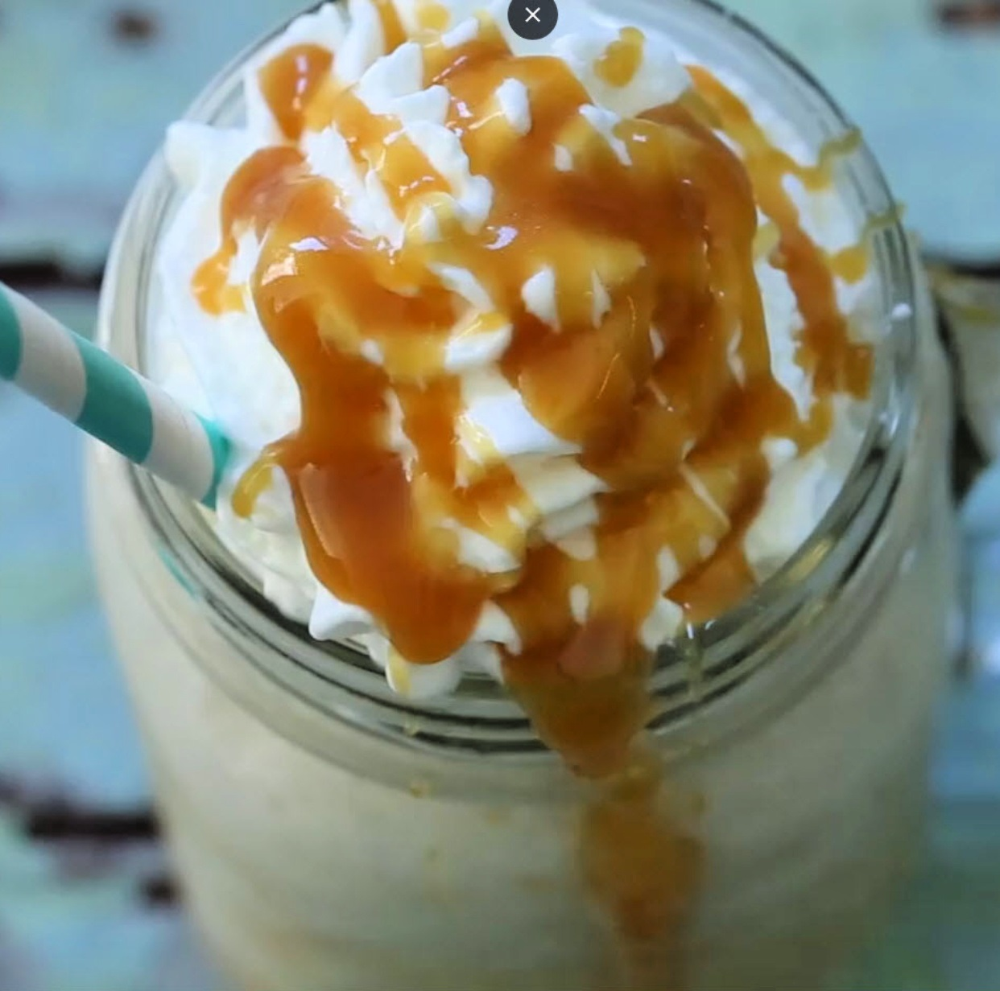

Caramel Frappuccino

Description
CaramelFrappuccino is enveloped between layers of whipped cream that's infused with cold brew, white chocolate and dark caramel. And on each layer of whipped cream sits a dollop of dark caramel sauce. These layers ensure each sip is as good as the last; all the way to the end.
Ingredients
- 2 cups ice
- 1 cup strong brewed coffee, cooled
- 1 cup low-fat milk
- ⅓ cup caramel sauce
- 3 tablespoons white sugar
Steps
- Blend ice, coffee, milk, caramel sauce, and sugar together in a blender on high until smooth. Pour drink into two 16-ounce glasses.